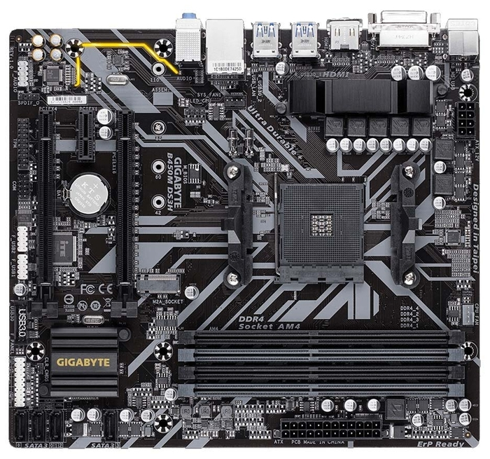
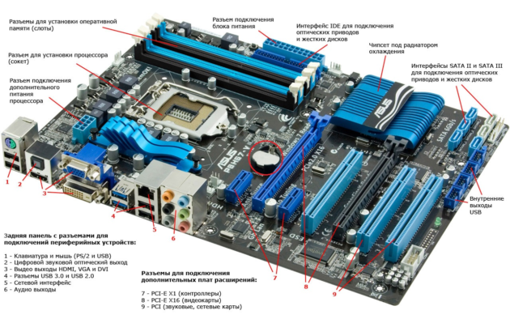
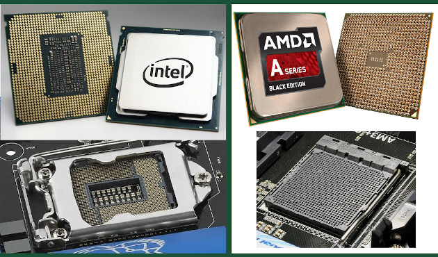
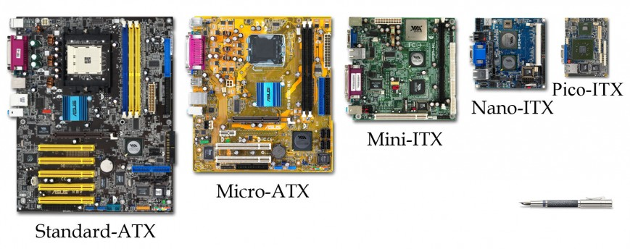
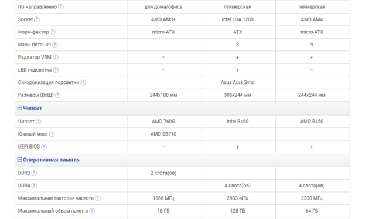

Материнская плата (мать, материнка, системная плата, главная плата) – это основная плата компьютера.
На ней расположены слоты и разъемы для подключения комплектующих ПК,
таких как: видеокарты, оперативная память, процессор, накопители данных, а также периферии.

Какими бы быстрыми не были оперативная память, процессор, видеокарта и накопители данных,
сами по себе они – кучка компьютерного железа.
Чтобы превратить ее в рабочую машину необходима платформа, объединяющая все компоненты в работающий системный блок.
Эту функцию и выполняет материнская плата.
Кроме внутренних слотов, для подключения основных комплектующих, на материках также распаяны разъемы для подключения внешних устройств и периферии.
Поэтому материнская плата так же объединяет все устройства в полноценно работающий компьютер.
Наконец, системная плата отвечает за звук компьютера, поскольку в нее встроена звуковая карта.
А также за доступ в интернет, за счет встроенного сетевого адаптера.
Разобравшись с предыдущими вопросами, время посмотреть из чего состоит материнка. И основными ее элементами можно назвать:
Сокет CPU. Это разъем для установки процессора.
Физически воплощен в виде площадки с контактами, на которую устанавливается процессор, после чего прижимается специальным фиксатором.
Тип сокета имеет важное значение при сборке компьютера, но об этом позже
Слоты PCI Express – разъемы для подключения комплектующих к ПК.
Это могут быть: видео, сетевые, звуковые карты, Wi-Fi модули, SSD накопители и т.п.
Слоты под ОЗУ – сюда вы устанавливаете планки оперативной памяти
SATA разъемы — служат для подключения жестких дисков, SSD накопителей или привода оптических дисков
Чипсет — это микросхема или группа микросхем, обеспечивающая обмен данными между процессором, оперативной памятью, устройствами хранения данных,
а также периферией и другим оборудованием.
На материнской плате может быть воплощён в виде северного и южного мостов, либо только южного моста
Микросхема BIOS и батарейка питания CMOS памяти. В этой микросхеме хранится прошивка BIOS (EFI) – набор микропрограмм, работающих с аппаратурой компьютера. В CMOS хранятся настройки BIOS, а для того чтобы они не сбивались
когда вы выключаете компьютер (данная память энергозависима), используется специальная батарейка, которая ее питает
Внешние разъемы — как правило это USB разъемы, VGA и HDMI выходы для вывода изображения на монитор,
Ethernet разъем для подключения интернета, а также аудио входы/выходы для подключения колонок и микрофона
Разъемы питания. Собственно, как сама материнка – процессор и система охлаждения также требуют питания
Гнезда подключения USB разъемов с корпуса ПК. Сюда же можно отнести контакты для подключения PC спикера,
кнопки питания и индикатора работы ЖД, расположенных на одной из панелей системного блока

В принципе это основной набор который можно встретить на типичной материнской плате, но также необходимо помнить,
что у разных производителей и моделей он может отличаться, поэтому переходим к следующему пункту.
Сегодня на рынке доступно просто огромное количество моделей материнских плат от ASUS, MSI, GIGABYTE, Asrock, Esonic и многих других компаний. Считаю, что деление комплектующих на виды по производителю, в некоторой степени справедливо, но только в плане качества.
По характеристикам же у каждой компании есть свой модельный ряд сопоставимый с модельным радом конкурентов.
Материнские платы можно разделить на два вида в зависимости от поддерживаемой марки процессора: под Intel или AMD. Дело в том, что способ установки процессоров от первой компании отличается от второй. Ножки контактов у Intel расположены на сокете, а контактные площадки на процессоре. У AMD же – наоборот.
Кроме этого, у них отличаются крепления системы охлаждения, а также размеры самого сокета.

Но сокеты отличаются не только в зависимости от производителя процессора. У каждой компании есть несколько поколений процессоров.
Например у Intel есть сокеты LGA 1151, LGA 1151-V2, LGA 1200. У AMD: AM1, AM3+, АM4, FM2, FM2+.
Они также отличаются друг от друга, и не всегда процессор одного поколения станет в сокет от другого.
Самое же характерное разделение материнок по виду можно произвести по форм-фактору — параметр, определяющий площадь платы, а также количество разъемов под основные и периферийные устройства.
Самые распространенные форм-факторы материнских плат в потребительском сегменте сегодня: ATX, Micro-ATX и Mini-ITX:
Standard-ATX или просто ATX — самый распространенный форм-фактор.
Отлично подходит, как для игровых машин, так и для рабочей системы.
Размеры материнских плат ATX формата — 305/244 миллиметра.
Хорошо совместимы с большинством типов корпусов.
Достаточно большая площадь снижает вероятность перегрева,
поскольку места для комплектующих много и им не приходится быть зажатыми в ограниченном по размеру корпусе, что положительно сказывается на потоке воздуха между ними.
Позволяет устанавливать в системный блок несколько видеокарт
Micro-ATX уступают в размерах предыдущему типу (244/244 миллиметра) за счет чего позволяют собрать более компактный системный блок.
Однако за уменьшение размеров приходится платить функциональностью.
Так материнки формата Micro-ATX имеют, как правило меньший набор слотов PCI Express и разъемов под ОЗУ в сравнении с платами ATX.
Пригодны больше для рабочих ПК, но также часто используются и в игровых сборках
Mini-ITX — одни из наиболее компактных материнок с габаритами 170/170 миллиметров.
При желании повозится с подбором оборудования и корпуса на Mini-ITX можно собрать мощный игровой ПК.
Однако проще использовать такую компактность для рабочей машины

Подытоживая, можем выделить основные характеристики материнской платы:
Форм-фактор. Как было сказано, этот параметр,
включает в себя размер, места крепления материнки, а также разъемы для дополнительных устройств
Тип сокета. Поскольку конкретный вид процессоров требует определенный разъем,
выбранная вами модель ЦП будет определять эту характеристику
Количество слотов и поддерживаемый тип ОЗУ.
Первое указывает на возможности увеличения объема оперативной памяти, второе — на скорость ее работы
Частота системной шины. Напрямую влияет на производительность компьютера. Чем больше – тем выше будет производительность ПК. Естественно, это не единственный фактор, влияющий на скорость работы компьютера,
однако необходимо подбирать компоненты так, чтобы частота системной шины не была меньше, чем у других элементов
Чипсет – один из важнейших пунктов при выборе материнской платы.
По-большому счету, от него зависит тип процессора, который можно будет использовать на материнке. Кроме того, модель чипсета влияет на тип оперативной памяти и количество поддерживаемой периферии.
Грубо говоря – чипсет определяет функциональность материнской платы
Количество слотов PCI Express.
От этого зависит количество и возможность подключения как видеокарт,
так и других плат расширений, использующих данный интерфейс
Число гнезд SATA – позволит понять сколько HDD, SDD, и приводов оптических дисков возможно подключить
Наличие и характеристики интегрированных: сетевой,
графической и звуковой карт – позволит понять на что будет способен ваш ПК без покупки их дискретных аналогов
Наличие и количество внешних разъемов – как для стационарного компьютера, так и для ноутбука важно наличие хотя бы 3 USB портов, выхода на наушники и входа для микрофона.
Кроме того зачастую также необходим Ethernet порт, VGA (уже довольно старый), HDMI.
Хотя здесь больше необходимо отталкиваться от собственных потребностей

Материнская плата — сложное устройство, соединяющее между собой все компоненты компьютера, управляющее их работой, и определяющее количество подключаемого к ПК оборудования.
Эта плата определяет характеристики вашего ПК и устанавливает ограничения по его апгрейду.